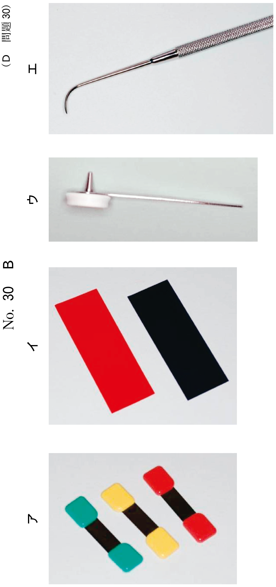
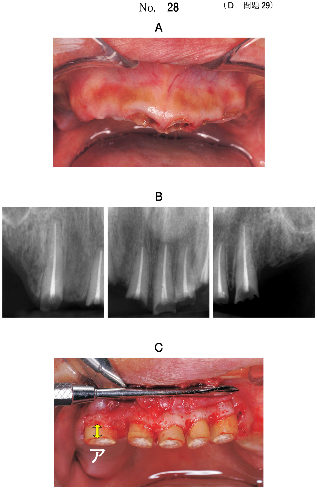
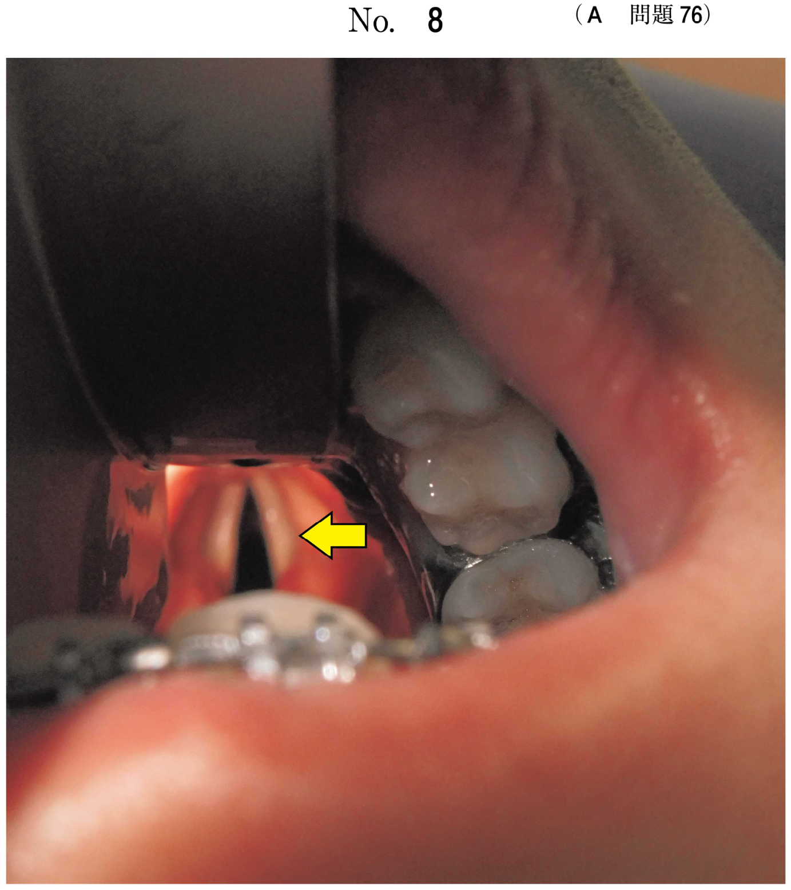

骨折
顎骨骨折の画像診断
骨折の画像診断では、骨折線の部位と骨片の偏位を確認する。
骨折の分類
| 分類 | 定義 | 例 |
|---|---|---|
| 直達骨折 | 外力が加わった部位に生じる骨折 | オトガイ部打撲→正中部骨折 |
| 介達骨折 | 外力が加わった部位から離れた部位に生じる骨折 | オトガイ部打撲→関節突起骨折 |
出題ポイント
- オトガイ部打撲では関節突起骨折を疑う（介達骨折）
- 関節突起骨折は頻度が高い
下顎骨骨折
関節突起骨折の特徴
- 顎関節、特に関節突起骨折の頻度が高い
- 骨片は外側翼突筋に牽引される
- 内側前下方へ転位し、顎関節から脱臼することが多い
下顎骨の解剖学的部位
| 部位 | 特徴 |
|---|---|
| 関節突起部 | 介達骨折で最も多い。両側性になることも |
| 下顎角部 | 智歯周囲に骨折線が入りやすい |
| 下顎骨体部 | 歯根部に沿って骨折線が走行 |
| 筋突起部 | 側頭筋が付着 |
| 正中部 | 直達骨折で生じやすい |
上顎骨骨折
頬骨上顎骨複合骨折（三脚骨折）
頻度が高い。以下の三点で骨折し陥凹する：
- 頬骨弓
- 上顎骨頬骨突起部（上顎洞前壁〜後壁部）
- 前頭上顎縫合部（眼窩外側〜下壁部）
吹き抜け骨折（blow-out fracture）
顔面前方から顔面中央への強い衝撃で、眼窩下壁が上顎洞へ骨折陥凹する。
骨折の画像検査
検査法の選択
| 検査法 | 特徴・適応 |
|---|---|
| パノラマX線 | 下顎骨全体の概観。スクリーニングに有用 |
| 頭部後前方向撮影法（PA法） | 下顎骨、特に顎角部を適切に描出。骨折線の走行評価に有用 |
| Waters法 | 顔面全体の画像化。上顎骨・頬骨骨折の評価 |
| CT | 骨形態や3次元的位置を詳細に観察 |
| セファログラム | 上顎骨骨折の精査 |
追加検査の選択
- 骨折線の走行評価 → 頭部後前方向撮影法
- 側方向撮影法は顎骨が重複するため骨折線診断に不適
- 側斜位経頭蓋撮影法は顎関節部検査用
過去問で確認
104D40
39歳の男性。オトガイ部の疼痛と開口障害とを主訴として来院した。昨夜自転車で走行中に転倒しオトガイ部を強打したという。初診時のエックス線写真（別冊No.40A、B）とトレース図（別冊No.40C）とを別に示す。
骨折部位はどれか。2つ選べ。


a ア
b イ
c ウ
d エ
e オ
b イ
c ウ
d エ
e オ
正解：c, e
【解説】オトガイ部打撲では、直達骨折（正中部＝ウ）と介達骨折（関節突起部＝オ）の両方を疑う。開口障害は関節突起骨折を示唆する所見。
110D38
78歳の男性。咬合異常を主訴として来院した。3週前に歩行中に転倒し上唇と下顎部を強打したという。初診時のエックス線写真（別冊No.38A）とCT（別冊No.38B）を別に示す。
骨折の部位はどれか。1つ選べ。


a 両側下顎角部
b 両側筋突起部
c 両側下顎骨体部
d 両側関節突起部
e 下顎左側犬歯部
b 両側筋突起部
c 両側下顎骨体部
d 両側関節突起部
e 下顎左側犬歯部
正解：d
【解説】下顎部打撲による介達骨折で両側関節突起部骨折を生じている。CTで両側の関節突起に骨折線を認め、骨片は内側前下方へ転位している。咬合異常は関節突起骨折による下顎位の変化を示唆。
110A89
75歳の男性。転倒し右頰部を打撲したという。エックス線写真（別冊No.12）を別に示す。
骨折線の走行を評価するために追加すべき検査はどれか。1つ選べ。

a 咬合法
b Waters法
c 頭部側方向撮影法
d 側斜位経頭蓋撮影法
e 頭部後前方向撮影法
b Waters法
c 頭部側方向撮影法
d 側斜位経頭蓋撮影法
e 頭部後前方向撮影法
正解：e
【解説】頭部後前方向撮影法は下顎骨、特に顎角部を適切に描出でき、骨折線の走行評価に最適。側方向撮影法は顎骨が重複するため不適。側斜位経頭蓋撮影法は顎関節部検査用。